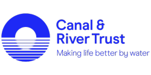

Our Fantastic Sponsors
Our Sponsors
Want to see your name on this list? Can you help us? It could be a donation of cash, services, goods or some other help. Get in touch with us.
| Canal & River Trust Canal & River Trust support our work in keeping the Tees a safe place for everyone. They are providing support to house our boat and enabling us to utilise their excellent facilities.  |
| Police & Crime Commissioner for Cleveland The Police & Crime commissioner for Cleveland has supported Tees River Rescue with a generous grant which purchase Adjutor our very first boat. The PCC has been out on patrol with us to see some of the issues on the river first hand. |
| Halfpenny Accounting As a charity getting our figures and cash flow right is a must and we need to be concise and clear about money to make sure we are spending our funds wisely and legally. Halfpenny Accountancy help us in that goal. |
| RiverShack RiverShack is about having a great Time Out on the River Tees...either on it, beside it - or maybe in it 🙂 The team have supported us and we are working together to make sure the Tees is a safe environment for people to enjoy themselves. |
| Essex Communications | Two Way Radio Hire Communications Essex Communications is a company with years of experience in the radio communications industry. We listen to the customer and provide a competitive price to meet your requirements. We will guarantee to do our best to beat any quote you receive and still deliver you a top premium service. |